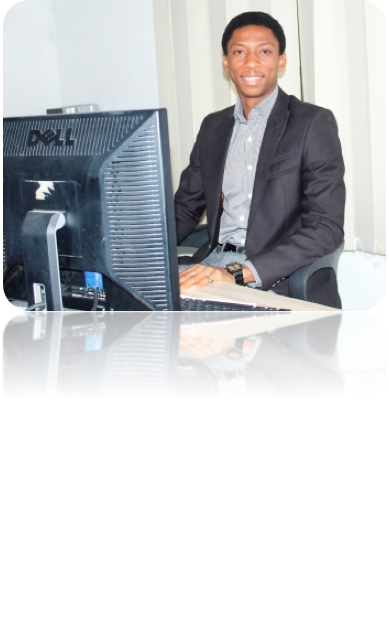

Water Relief Africa Board Members
Water Relief Africa is made up of an international Board of Trustees and a small secretariat led by our Executive Director. The Water Relief Africa Trustees are the Chairs of each Water Africa Relief member organisation. The Board is currently chaired by Mberede Ugochukwu. They are all volunteers who give their time, energy and expertise for free to help Water Relief Africa change lives.
Anthony Olisa
Anthony Olisa is a highly motivated and proactive young professional, always seeking new ways of adding value to the work of organizations through the application of his wide range of skills and competencies. He believes that his discipline, intellectual curiosity, resourcefulness and a keen sense for organizational priorities and business needs, will add immense value to the work of any organization. He has been passionate about social works and impact projects within and outside Nigeria and has engaged with different international NGOs to achieve that. He is a double honour graduate with a degree in Geology and Mining technology and Civil Engineering. My interests range from nature photography to digital marketing to technology. I am also interested in traveling, entrepreneurship, and volunteering.
Chidinma Uwalaka
My enthusiastic involvement in many activities outside the academic circle has served me well in nurturing my leadership and communication skills. I’m a person who believes in possibilities; i do overcome my challenges with high achievement. I love travelling and meeting people. I am a person who is positive about every aspect of life. There are many things I like to do, to see, and to experience. I like people, And, I like to laugh. I have this passion to help and influenced people positively. Graduated from Kuala Lumpur Metropolitan University with B.Sc in information technology , Master’s Degree in Entrepreneurship and Innovation.
Meet our Director
Ugochukwu P. Mberede
A vibrant and Proactive man with a deep sense of purpose and commitment; seeking relevance in a challenging environment with the sole aim of deriving satisfaction and adding value to the Society. He take delight in: learning new things, meeting people, team work, taking responsibility and becoming proficient in all my endeavors. He holds a Bachelors degree in Civil Engineering (Water resources option) and a Master’s degree in-view in Water Resources Engineering. He loves Travelling and adventures, has always made himself available for many Volunteering opportunities.I love Africa, I believe in Africa, Together we can build Africa.